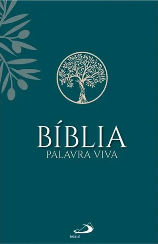
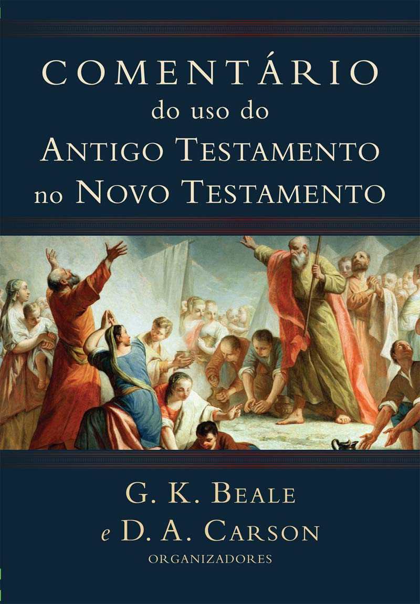

Livro de referência
Bíblia Palavra Viva
Paulus. Uma Bíblia de estudo que propõe a leitura da Bíblia em diálogo com outras passagens bíblicas.
Ver este livro na seção de livros
Livro de referência
Comentário do uso do Antigo Testamento no Novo Testamento
G. K. Beale. Comentário às passagens do Novo Testamento que se apoiam em passagens do Antigo Testamento.
Ver este livro na seção de livrosO papel do Espírito Santo na passagem do retorno a Deus para uma vida nova.
A conversão e o arrependimento têm uma raiz profunda na aliança que une o Antigo e o Novo Testamento. Em Ex 19,5, a promessa de Deus está ligada à escuta de sua voz e à guarda da aliança: “Sereis o meu povo se obedecerdes à minha voz e guardardes a aliança”. Contudo, o ser humano não consegue permanecer plenamente fiel apenas por seu próprio esforço. É nesse cenário que se compreende a promessa de Ez 36,25-27: Deus concede o seu Espírito, que torna possível a conversão e uma vida fiel. Sem a ação do Espírito Santo, não há mudança real nem conversão verdadeira.
O contexto de Pentecostes e os componentes da conversão
A estrutura da conversão em Atos 2,38
Em Atos 2,38, a resposta à conversão reúne três componentes. O primeiro é o arrependimento: viver tendo Jesus como Senhor absoluto. O segundo é ser batizado no nome de Jesus, expressão pública e visível da fé. O terceiro é o dom do Espírito Santo, que sela e protege, concedendo força para viver uma vida nova. Esses elementos ajudam a compreender a conversão como uma realidade que alcança tanto a profissão pública da fé quanto a vida interior.
Por que a ação do Espírito é indispensável? Quando alguém proclama o nome de Jesus, mas sua vida pessoal e interior não corresponde ao que professa, surge uma contradição. A fé não se limita ao que é visível: o Espírito Santo sustenta a mudança que permite viver de modo coerente com o senhorio de Jesus.
“Shuv” e “metanoia”: retornar e voltar-se para Deus
A conversão no Antigo Testamento
No Antigo Testamento, a conversão relaciona-se ao verbo hebraico shuv, que significa retorno. Esse retorno é interior e íntimo; vai além do que é apenas visível ou cultural. Converter-se, portanto, não é somente acompanhar comportamentos externos, mas atravessar uma passagem cujo movimento acontece de fora para dentro pela ação divina.
Há também o risco de viver hiperconectado ao que os outros fazem, preso aos ruídos sociais, sem conectar-se à si mesmo. A conversão pede uma travessia, uma “Páscoa” que não se reduz às influências externas: é Deus quem age no interior e conduz a pessoa de volta a Ele.
A conversão no Novo Testamento
No Novo Testamento, metanoia indica mudança de mentalidade, enquanto epistrophein expressa a volta para Deus. Quem permanece ancorado nas próprias convicções corre o risco de fechar a mente no egoísmo, com os “lucros e luzes apagadas”. É preciso que Deus eduque o olhar para que a pessoa reconheça o caminho de retorno.
Estar institucionalmente na Igreja não é o mesmo que estar espiritualmente em Deus. Um termômetro dessa relação é o tempo dedicado a Ele também fora dos templos. A conversão, assim, envolve a vida concreta e a disposição interior de voltar-se continuamente para Deus.
Ezequiel 36,25-27: o coração e a promessa do Espírito
Em Ez 36,25-27, o coração de pedra simboliza uma inclinação fundamental para o mal. Removê-lo significa atingir a raiz dessa propensão que afasta o ser humano de Deus. A promessa não termina na retirada do que impede a fidelidade: Deus concede o seu próprio Espírito para que o novo aconteça de fato na vida diária.
O Espírito de Deus é a força dinâmica que capacita a pessoa a realizar coisas novas. Assim, a promessa de Ezequiel ilumina a aliança anunciada em Ex 19,5: diante da dificuldade humana de permanecer fiel, Deus age no coração e torna possível responder à sua voz. A conversão não é fruto de mérito puramente humano, mas da ação divina que remove o que afasta e concede força para uma vida nova.
A prática da conversão e o processo da graça
Da dor inicial à reconciliação cotidiana
Uma ferida só cicatriza plenamente quando é exposta à luz e tratada com os recursos adequados: remédio, cirurgia e limpeza. Em At 2,37, os ouvintes ficam “compungidos no íntimo do coração”, expressão entendida como “perfurados” ou “esfaqueados no coração”. Assim, é preiso deixar a Palavra acessar o mais íntimo do nosso coração e romper a resistência defensiva que nos leva a pensar “essa palavra não é para mim”.
Segundo o Catecismo da Igreja Católica, parágrafos 1435-1437, ela se realiza na vida cotidiana por meio de gestos de reconciliação, cuidado com os pobres, defesa da justiça, correção fraterna, exame de consciência e vivência sacramental na Eucaristia e na Penitência. A ação do Espírito torna-se visível numa vida que, dia após dia, aprende a responder à graça.
Uma aliança vivida pela força do Espírito
A exigência da aliança anunciada em Ex 19,5 encontra resposta na promessa de Ez 36,25-27 e na realidade de Pentecostes proclamada em At 2,37-38. A conversão autêntica não é apenas uma decisão exterior: o Espírito Santo remove o coração de pedra, reconstrói a mentalidade e capacita a pessoa a manifestar a fé em atos cotidianos de amor, justiça e reconciliação.
Arrepender-se, professar publicamente a fé e receber o Espírito são dimensões inseparáveis desse caminho. Pela ação de Deus, o retorno torna-se vida nova e a fidelidade à aliança passa a se expressar no modo de viver.